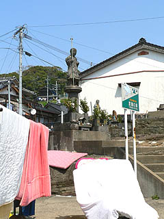

渡錫の鼻/佐賀県唐津市
唐津市（旧肥前町）の高串港。
猫がのろのろとうろつく昼下がり、一瞬でも気を抜くと昼寝してしまいそうな、というかすでに昼寝しているかのような静かな港町。
そんな静かな港だが一瞬、歴史の表舞台に登場するシーンがある。
弘法大師渡海の地として。
先般、東光寺の項でも触れたが、弘法大師、空海は遣唐使として唐の西安で密教奥義をマスターするのだが、その国内の最終寄港地がここ高串の港だったというのだ。
大阪を出発した第十六代遣唐使船は広島福岡平戸と寄港し、この地を国内最後の寄港地として唐に向かったのである（諸説あり）。
当時、日本から大陸に渡るルートとしてこの高串港がよく使われたのかどうかは知らないが、まあ、遣唐使船が停泊する位だからこの近辺ではかなり大きな港だったのだろう。
そんな弘法大師の偉業を讃えよう、という事で千数百年後に出来たのがこちら渡錫の鼻の石像。
港の近くの家々が密集しているところにポツンとエアポケットのような空間がある。
元々は大きな岩だったのだろうか、コンクリで塗り固められた少し小高いスペースに数体の石像が並んでいる。
密集した港町の中でこのスポッと抜けた感じがいかにもこの集落の中でも特別の場所である事を物語っているようだ。
階段を登ろうっと…うっ、蒲団が干してあるじゃないですか〜！
蒲団を踏まないように階段を登っていると「あ、すみません、今片付けますから〜」の声。
おばさんが慌てて飛び出してくる。いやいや、そんな恐縮せんでよかですよ。
確かに蒲団干しには最適の陽気。大師サマもそれくらいは許してくれますって。

という訳で気を取り直して階段を登る。
そこには弘法大師の石像が立っていた。
旅装なのか錫杖と荷物を持ち港を眺める大師サマ。
昭和9年に誕生した大姉サマである。
「よっしゃ〜！アメリカに渡って超ビッグになってやるぜ！」などと中ビッグ時代の吉田栄作みたいな燃え盛る思いをを胸に秘めているのだろうか。
この後、命からがら上陸した一行は色々な苦難を乗り越え、入唐する。
そこであの伝説の「手足口に筆を5本持って五行書を一気書き」という書道界の必殺奥義（？）を皇帝の前で披露し、一躍有名文化人の仲間入りを果たすのである。
吉田栄作も同時に5人を演じわけるとか、そういう超絶テクがあればハリウッドスターになれたのに・・・ま、最近結構いい役者になったとは思うんですけど。
マネーの虎の吉田栄作はよかったなあ〜。
あっ、大師サマの話でしたね。
大師像の下にはもう一体の大師サマ。
こっちは見事にペンキで着彩されている。
そして手に持つ緑色の棒のようなものは・・・むむむ、もしかしてサカナ？・・・ということは鯖大師？
まあ、漁港だし、それもありっつー事で。
周辺にもペンキ塗りの石像が点在している。
九州のお寺を何軒か参拝すれば、すぐにお分かりいただけると思うが、かの地ではかなり高い確率で石像だろうがコンクリ像だろうがお構いなしにペンキでバンバン塗ってしまうという実に素晴らしい習俗がある。
特に顕著なのが不動明王。
福岡の篠栗霊場を例に出す迄もなく塗ってないものの方が少ないのでは、と思わせる程こてこてに塗られている。
もっちろんここの不動サマも着彩済み。
エビスさんも着彩済み。さすが漁師町だ。金の鯛が眩しい。
そして弘法さんの対面には大きな不動サマが。
こちらはコンクリ像。
コンクリで不動サマという2大ペンキ塗り条件を供えており、勿論きっちり塗られています。
波切不動だそうで。中々勇ましい不動サマである。
繰り返すようだが九州北部にはこの手の不動明王がゴマンといるのだ。
かなり浅野祥雲っぽい雰囲気を醸し出している。
足元の眷属さんもきっちり塗られてます。
この不動サマ（と眷属）の建立は昭和28年。唐津市街に程近い元明寺というお寺のお坊さんが建立した。
昭和60年に塗り直しされている。と台座に記されていた。
新四国46番とあるのでこの辺一帯で八十八カ所があるのだろう。
これといって巨大な仏像があるわけでもなく、激しいパッションが放出されている訳でもないのだが、実に印象的な場所だった。
逆にこれだけ地味な信仰スポットでさえもこのようにペンキ塗り習俗が浸透しているのだ。
そんな九州北部の「塗りっぷり」を象徴する物件として敢えて紹介させていただいた次第。
皆さんも九州を訪れた際には自分のお気に入りペンキ塗り石像を探してみて下さい。
ひっそりとした港にかつて渦巻いていた天井知らずの向上心。
そんな旅立ちの姿を後ろから眺めてみた。
背中の荷物にそっと永ちゃんの「成りあがり」を添えたいものです。
2006.4.
珍寺大道場 HOME